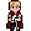
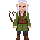

바람 마을에서 시작하는 모험 · 기사와 요정
직업과 이름을 고르세요


저장된 기사가 지워집니다. 정말 새로 할까요?
게임 기록은 이 폰 브라우저 안에만 저장됩니다. 브라우저 데이터를 지우면 함께 사라지니, 메뉴의 "저장 내보내기"로 따로 보관해 두세요.
폰 저장 공간이 부족하거나 브라우저가 저장을 막았습니다. 방금 한 일은 되돌렸습니다.
폰을 가로로 돌려 주세요
불러오는 중…